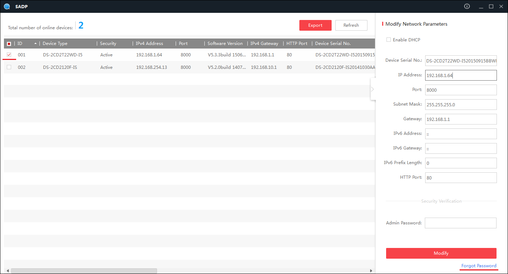

Descargar el Programa SADP Tools De Hikvision SADP Tools
Ejecutar el programa
Copiar el Serial completo que aparece (Observe la Imagen)

Nota Para que funcione el código en las versiones DS o superiores solo debe seleccionar el serial a partir del primer número siguiente al segundo guion, por ejemplo:
Del serial DS-2CD2732F-IS20121226CCCH546641810 el serial se tomaria a partir de 20121226CCCH546641810
Ingresar el año, mes y día que aparece en el DVR o Cámara
Copiar el código de recuperación e ingresarlo en forgot password o recuperar contraseña
El usuario por defecto quedará : admin y la contraseña : 12345